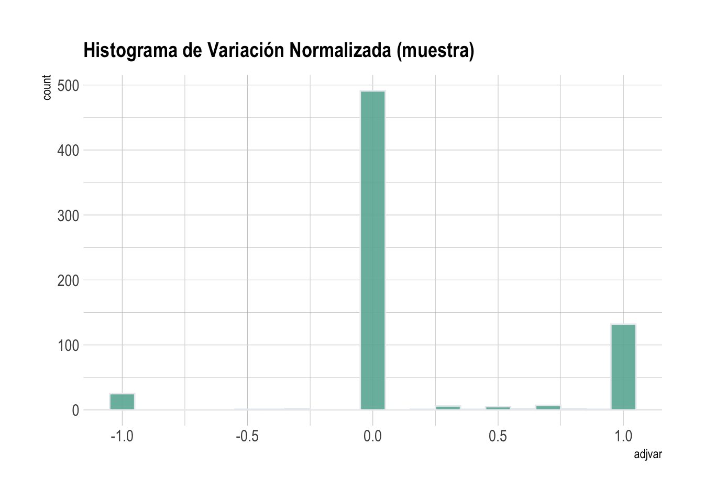

knitr::opts_chunk$set(echo = TRUE, eval = FALSE)
options(scipen = 999, warn=-1)
#cargar Librerias
source("R/librerias.R")
# Cargar Funciones
source("R/funciones.R")4 Evolución
Cálculo de indicadores territoriales de evolución criminal
4.1 Introducción
Dentro del análisis criminológico espacial es fundamental conocer la evolución de los delitos en el tiempo. En esta sección, trabjará en la construcción y análisis de indicadores territoriales a nivel comunal de evolución criminal. El indicador para cumplir este propósito será uno que mida la variabilidad (positiva o negativa) normalizada de la cantidad delitos de las comunas en dos periodos de tiempo.
Al comprender la evolución de los delitos en el tiempo, se busca tener una idea rápida y macro de la variabilidad de cada uno de los tipos de delitos en el país, como diagnóstico claro y preciso de la realidad en dos periodos de tiempo.
4.2 Delitos Base
Cargar la librerías y funciones de uso general
Lectura de Insumos
Para este resumen general utilizaremos los delitos dentro de la clsificación de Barrios Comerciales, entonces son urbanos. Puede ser con la base que ustedes estimen conveniente, pero debe tener la variable fecha.
delitos_cat_bc_URB <- readRDS("data/delitos/delitos_eval_bcom_urb.rds")delitos_cat_bc_URB <- readRDS("data_samples/delitos_eval_bcom_urb.rds") Generación de Tablas Resumen por día
Seleccionamos la columnas que nos interesan y eliminamos la geometría.
del_all <- delitos_cat_bc_URB %>%
st_drop_geometry() %>%
mutate(tiempo = (year(FECHA_DEL) * 100) + month(FECHA_DEL)) %>%
select(COMUNA, tiempo, TIPO )Tabla de cuenta de delitos diarios por comuna y tipología
delcomuna <- del_all %>%
group_by(COMUNA, TIPO, tiempo) %>%
summarise(cantidad = n(), .groups = "keep")4.3 Estadísticas
En esta etapa se realizarán la contabilidad de delitos por comunas y tipología, además se agregará el cálculo de una medida de dispersión como la varianza para aportar información. Queda abierta la posbilidad de agregar otras medidas estadísticas.
4.3.1 Varianza
La varianza es una medida de dispersión que representa la variabilidad de una serie de datos respecto a su media, se denota como \sigma^2.
varianzas <- delcomuna %>%
filter(!is.na(TIPO)) %>%
group_by(COMUNA, TIPO) %>%
summarise(varianza = sd(cantidad)^2,
cantidad = sum(cantidad), .groups = "keep")
# head(varianzas)4.3.2 Periodos
En esta etapa se van a definir los dos periodos que se compararán y así determinar la variabilidad. En este caso vamos analizar el segundo semestre del año 2017 versus el año 2022.
Periodo 1
p1_inicio <- 201707
p1_final <- 201707
ini <- delcomuna %>%
filter(tiempo %in% p1_inicio:p1_final) %>%
group_by(COMUNA, TIPO) %>%
summarise(inicio = sum(cantidad), .groups = "keep")Periodo 2
p2_inicio <- 202207
p2_final <- 202212
fin <- delcomuna %>%
filter(tiempo %in% p2_inicio:p2_final) %>%
group_by(COMUNA, TIPO) %>%
summarise(fin = sum(cantidad), .groups = "keep")4.3.3 Consolidación
Finalmente se unen las tablas calculadas.
adjvar <- varianzas %>%
left_join(ini, by = c("COMUNA", "TIPO")) %>%
left_join(fin, by = c("COMUNA", "TIPO")) %>%
mutate_if(.predicate = is.numeric,
.funs = function(x) ifelse(is.na(x), 0, x))4.4 Indicador de Variación
En esta etapa se calcularà el indicador de la variación por cada tipo de delito y comuna. Corresponde a la diferencia entre los periodos (evolución) y se divide la suma de los dos períodos, para que el valor quede normalizado en valores entre 1 y -1.
adjvar <- adjvar %>%
mutate(adjvar = (fin-inicio)/(fin+inicio)) %>%
mutate_if(.predicate = is.numeric,
.funs = function(x) ifelse(is.na(x), 0, x))Histograma de la Variabilidad.
library(hrbrthemes)
p <- adjvar %>%
ggplot( aes(x=adjvar)) +
geom_histogram( binwidth=0.1,
fill="#69b3a2", color="#e9ecef", alpha=0.9) +
ggtitle("Histograma de Variación Normalizada (muestra)") +
theme_ipsum() +
theme(
plot.title = element_text(size=15)
)
p
4.5 Agregar Información Espacial
Finalmente se agregará elos resultados del análisis a la la geometrías comunales de Chile para poder cartografias los resultados.
Se de primeramente transformar las estructra de datos de formato largo a formato ancho, para que los valores de variabilidad de cada tipo de delito quede por columnas.
varianzas <- adjvar %>%
select(-varianza, -cantidad, -inicio, -fin) %>%
mutate(TIPO = gsub(pattern = " ", replacement = "_", x = TIPO)) %>%
pivot_wider(names_from = TIPO,
values_from = c(adjvar), values_fill = 0)Agregar a la geometrias comunales del INE.
Comunas_Chile <- readRDS("data/ine/Comunas_Chile.rds")comdel_dif <- Comunas_Chile %>%
left_join(varianzas, by = "COMUNA") %>%
mutate_if(.predicate = is.numeric,
.funs = function(x) ifelse(is.na(x), 0, x))Guardar Resultados en formato shapefiles
st_write(comdel_dif, "data/delitos/comdel_dif.shp", delete_dsn = T)4.5.1 Revisión por tipología
Selección de Región y Tipo de Delitos
# grep(pattern = "Desórdenes", x = names(varianzas), value = T)
tipo = "Desórdenes"
region = "13"
r_eval = comdel_dif %>%
filter(REGION == "13")Histograma
p <- r_eval %>%
st_drop_geometry() %>%
ggplot( aes_string(x=tipo)) +
geom_histogram( binwidth=0.1,bins = 3,
fill="#69b3a2", color="#e9ecef", alpha=0.9) +
ggtitle("Histograma de Variación Normalizada") +
theme_ipsum() +
theme(
plot.title = element_text(size=15)
)
pVisualización Espacial
mapview(r_eval, zcol = tipo)